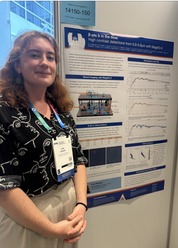
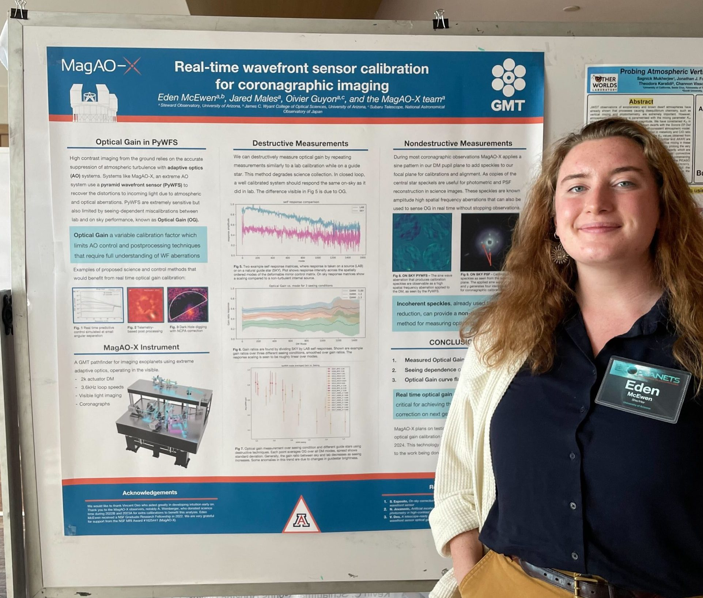
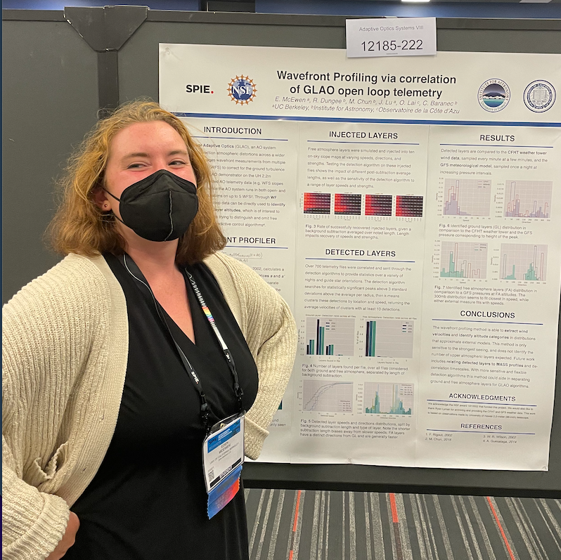
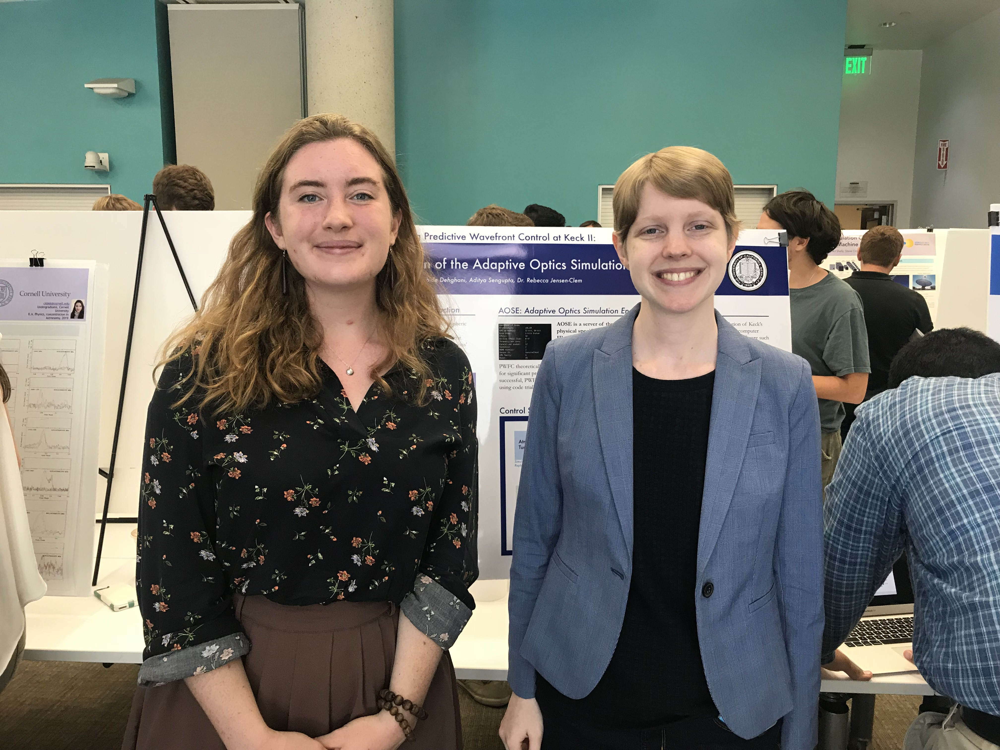

MagAO-X visible imaging of β-pic b
E. McEwen, J. Males, L. Pearce, et al.
SPIE Astronomical Telescopes and Instrumentation
July 5th 2026. Copenhagen, Denmark.
MagAO-X visible imaging of β-pic b
E. McEwen, J. Males, L. Pearce, et al.
Sagan Summer Workshop
July 21st 2025. Pasadena, CA.
Ground-based Observatory Synergies with HWO
E. McEwen, B. Sitarski
NASA HWO October Meeting
October 22, 2024. Rochester, NY.

Real-time wavefront sensor calibration for coronagraphic imaging
E. McEwen, J. Males, O. Guyon
Giant Magellan Telescope Community Science Meeting
September 6, 2023. Washington D.C.

Wavefront profiling via correlation of GLAO open loop telemetry
E. McEwen, R. Dungee, M. Chun, J. Lu, O. Lai, C. Baranec
SPIE Astronomical Telescopes and Instrumentation Conference
August 29, 2022. Montreal, Canada.
Demonstrating Predictive Wavefront Control at Keck II
E. McEwen, R. Jensen-Clem, J. Graham, D. Mawet, P. Wizinowich, S. Cetre
223 AAS
January 8, 2019. Seattle, WA.

Demonstrating Predictive Wavefront Control at Keck II: Construction of AOSE
E. McEwen, S. Dehghani, A. Sengupta, R. Jensen-Clem
Astronomy Poster Summer Intern Symposium (APSIS)
August 10, 2018. Berkeley, CA.